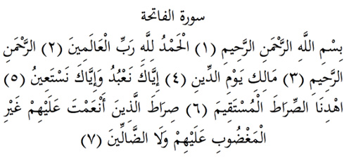

1

Fatiha Suresi
Anlamı: Er-Rahman, er-Rahim Allah’ın adıyla (1).
Hamd, bütün âlemlerin Rabbi olan Allah’ın hakkıdır. (2)
Er-Rahman, er-Rahim olan Allahın. (3).
Hesap gününün hâkimi olan Allahın, (4)
(O halde deyin ki: Ey Allahım!)
Biz sadece sana ibadet eder, sadece senden medet umarız. (5).
Bizi o dosdoğru yola koy (6).
Nimetlendirdiğin insanların yoluna... Gazabı hak edenlerin ve haktan sapanlarınkine değil... (7).
Sure ile ilgili açıklamalar:
(1) Bu cümleye kısaca Besmele denir. Müminlerin her doğru işe besmele ile başlamaları önemli bir edeptir, sünnettir, zikirdir ve fikirdir. Allah da kendi kitabına böyle başlayarak bu edebi kullarına öğretmiştir.
Er-Rahman, rahmetin, merhametin, acımanın bizzat kendisi ve kaynağı demektir. O yüzden bu isim sadece Allah için kullanılır. Er-Rahîm ise yarattıklarına acıyan, merhamet eden, er-Rahman olma özelliğini onlarda fiilen gösteren demektir. Bu iki isim de rahmet kökündendir.
Bu ve benzeri kelimelerde ön ek olarak gelen el-, ya da er-gibi takılar Arapçada bir kelimeyi belirli kılmak için kullanılır. Mesela kitap, herhangi bir kitap, el-Kitap ise bilinen ve söz konusu edilen kitap demektir.
Bu besmele cümlesi en-Neml Suresinde geçen (27/30) ve bir anahtar gibi her surenin başında tekrarlanan bağımsız bir ayettir. Ama el-Fatiha Suresinin de birinci ayeti sayılır.
(2) Hamd, güzel iş yapanı bu güzelliğinden dolayı takdir etme ve övmedir. Bütün güzellikler Allah’tan olduğu için, aslında her güzelliğin övgüsüne layık olan da odur. Mesela size bir iyilik yapan birisi teşekkürü hak eder ama bu iyiliğin kaynağını sürseniz en son halkada onun yine Allah’ın verdikleriyle yapıldığını görürsünüz. Anlamı hamd’e benzeyen şükür ise, kendisine iyilik yapana teşekkür etmektir. Teşekkür zaten şükür kökündendir. O halde hamd sadece Allah’a yapılır, ama teşekkür herkese yapılabilir.
Rab; besleyip geliştiren demektir. Eğitme/eğitim anlamındaki terbiye de bu kelimedendir. Yani mademki, besleyip geliştiren odur, o halde hamd da onun hakkıdır. Bu «el-hamdü lillahi Rabbi’l-âlemîn» cümlesi de İslam terbiyesinde besmele ile birlikte bir başlama ve bitirme cümlesidir. Buna da kısaca hamdele denir. Müslümanlar işlerine besmele ve hamdele ile başlarlar, ham-dele ile bitirirler. Bu bir sünnettir, edeptir.
(7) Hidayet, hem hakkı/doğruyu göstermek, hem de insanı fiilen hak olan yola koymak demektir. Allah’tan başkaları da hakkı gösterebilirler, ama sadece Allah insanı hak üzre kılabilir. Bu anlamda hidayet eden, yani hidayeti yaratan sadece Allah’tır.
Hidayet, sadece dinde doğru yolda olmak değil, dünya işlerinde de doğru ve isabetli olanı bulabilmektir. Bu sebeple bilinçli olarak bu ayetleri okuyan insan Allah’tan hem din, hem dünya hidayetini istemiş olur.
Hz. Peygamber (sa) gazap edilenlere Yahudileri, haktan sapanlara da Hıristiyanları örnek vermiştir.